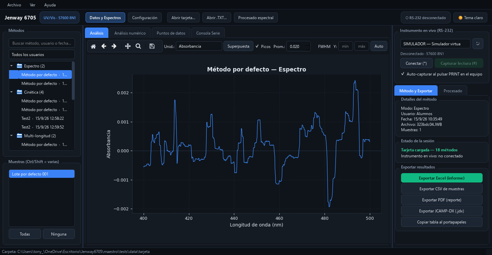

🧪 Visor de datos en tu navegador
Lee la carpeta copiada de la tarjeta del instrumento (.JWB/.JWX/.JWU) usando los
mismos parsers del programa — directamente en tu móvil o PC, sin instalar nada.
Elige la carpeta con el selector y verás los métodos decodificados.
📄 Documentación
- Especificación del formato de archivos (formatos .JWB/.JWX/.JWU/.TXT validados contra el instrumento)
- Guía del banco de pruebas RS-232 (protocolo serie verificado del 6705)
- Plan de implementación (bitácora de fases: 0–4)
💻 El programa de escritorio
La aplicación completa (PySide6) con procesado espectral, informe Excel y conexión RS-232 vive en el repositorio, junto con una versión portable (dos .exe, sin necesidad de Python).
github.com/Yakat1/espectrofotometro-lector →
Proyecto propio de laboratorio · sin licencia pública.